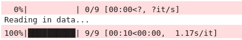
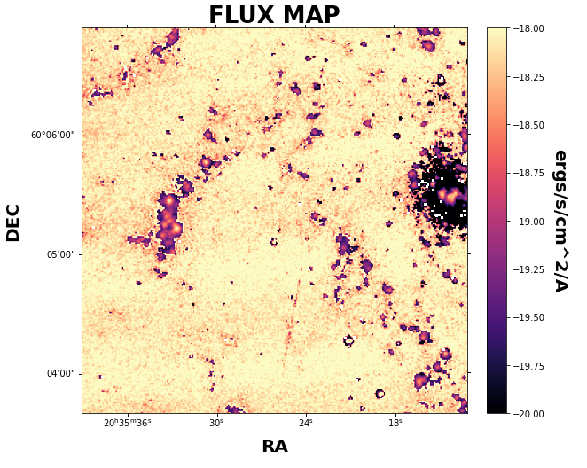

Basic Example Lite
This example is the much condensed version of our basic example for those of us already familiar with the parameters and how LUCI works. Let’s get started!
Let’s start with importing LUCI. Just as descsribed on the readthedocs page, we need to point our system path to our install location of the LUCI folder. We will additionally import the Luci plotting functions :)
You can download the example data using the following command:
wget -O NGC6946_SN3.hdf5 https://ws.cadc-ccda.hia-iha.nrc-cnrc.gc.ca/data/pub/CFHT/2307000z.hdf5?RUNID=xc9le6u8llecp7fp
This will download the hdf5 file for SN3 (R~400) NGC 6946. The file is just under 900 Mb, so the download may take a while. Note you may need to change the name of the HDF5 file to NGC6946_SN3.merged.cm1.1.0.
The region files used in the examples can be found in the ‘Examples/regions’ folder. To run the examples, place these region files in the same directory as the hdf5 file.
# Imports
import sys
sys.path.insert(0, '/media/carterrhea/carterrhea/SIGNALS/LUCI/') # Location of Luci
from LuciBase import Luci
import LUCI.LuciPlotting as lplt
We now will set the required parameters. We are also going to be using our machine learning algorithm to get the initial guesses.
#Set Parameters
# Using Machine Learning Algorithm for Initial Guess
Luci_path = '/home/carterrhea/Documents/LUCI/'
cube_dir = '/home/carterrhea/Documents/LUCI_test' # Path to data cube
cube_name = 'NGC6946_SN3' # don't add .hdf5 extension
object_name = 'NGC6946'
redshift = 0.000133
resolution = 5000
We intialize our LUCI object
# Create Luci object
cube = Luci(Luci_path, cube_dir+'/'+cube_name, cube_dir, object_name, redshift, resolution)
The output will look something like this:
Let’s quickly create a deep frame
# Create Deep Image
cube.create_deep_image()
Let’s extract a background region and take a look at it. The background region is defined in a ds9 region file called bkg.reg.
bkg_axis, bkg_sky = cube.extract_spectrum_region(cube_dir+'/bkg.reg', mean=True) # We use mean=True to take the mean of the emission in the region instead of the sum
lplt.plot_spectrum(bkg_axis, bkg_sky)
We now fit part of our cube defined by the bounding box 500<x<1100 and 700<y<1300 with a Gaussian on the Halpha line, the NII-doublet, and the SII-doublet with a binning of 2. We are also going to constrain our velocities and sigmas. Furthermore, we will calculate uncertainties using the Hessian method. We can also run multiple threads with the n_threads argument.
# Fit!
vel_map, broad_map, flux_map, ampls_map = cube.fit_cube(['Halpha', 'NII6548', 'NII6583', 'SII6716', 'SII6731'], 'gaussian', [1,1,1,1,1], [1,1,1,1,1], 500, 1100, 700, 1300, bkg=bkg_sky, binning=2, uncertainty_bool=True, n_threads=2)
The output should look something like this:

Let’s take a look at the velocity map. We can play with the colorbar limits with the clims argument. Please note that the flux plot is automatically scaled by log10. However, the velocity and broadening maps are not scaled automatically.
lplt.plot_map(flux_map[:,:,0], 'flux', object_name=object_name, filter_name=filter_name, output_dir=cube_dir, header=cube.header, clims=[-19, -15])
And let’s see what this looks like!
We can also plot the velocity and broadening.
lplt.plot_map(vel_map[:,:,0], 'velocity', object_name=object_name, filter_name=filter_name, output_dir=cube_dir, header=cube.header, clims=[-200, 200])
lplt.plot_map(broad_map[:,:,0], 'broadening', object_name=object_name, filter_name=filter_name, output_dir=cube_dir, header=cube.header, clims=[10, 50])
The resulting data maps will be placed in a folder called Luci_outputs. Inside there, you will find additional folders containing the Flux, Amplitude, Velocity, and Broadening maps for each line and their uncertainties.